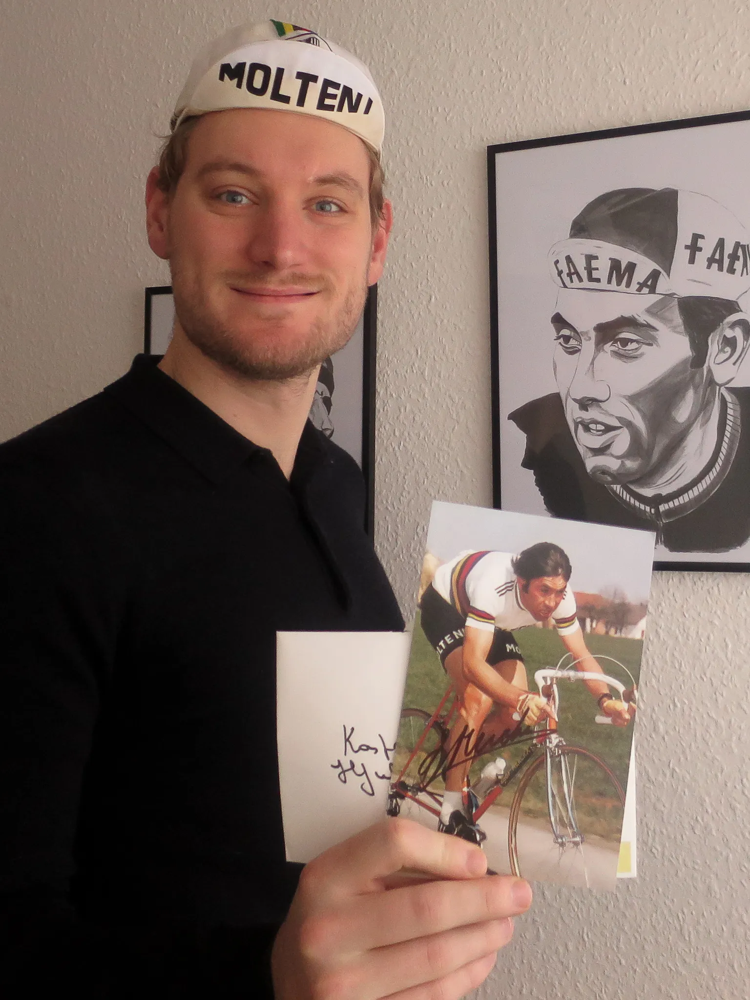

Eddy Merckx Personally Wishes Squadra Molteni a Happy Holiday

Upon returning from his Christmas holiday, the team’s lieutenant, Kasper Sørensen, found a signed post card in his letterbox from the master himself, Eddy Merckx.
In spring this year Kasper met Eddy Merckx by pure chance at his house in Belgium.
Following their short meeting, Kasper left some fan mail with his address and information about Squadra Molteni’s Facebook page.
He never thought more of it, until he saw the card.

I Joked About It
– Before I came home, my girlfriend told me I had a handwritten envelope from Belgium in the post box.
I joked that Eddy was the only Belgian, who could know my private address, but I never dreamed it could be from him, he says.
The postcard shows a well-known photo of Eddy Merckx, in his rainbow jersey riding for Molteni.
The enveloped is stamped in Belgium and sent with priority airmail on December 18.
– I like to think that Eddy has written and posted the letter himself, but I also know that Claudine, his wife, used to take care of those things.
Squadra Molteni is Very Honoured
Squadra Molteni is more than honored to receive a gesture like this.
During his career Eddy Merckx was known to give extraordinary attention to his fans, this obviously hasn’t changed.
We would like to wish Eddy Merckx a merry Christmas and a very happy new year.